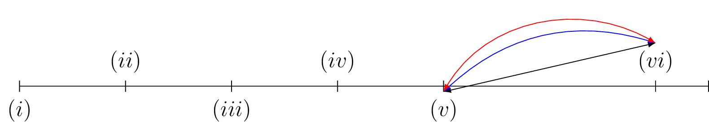

\documentclass[12pt,a4paper]{standalone}
\usepackage[utf8]{inputenc}
\usepackage[T1]{fontenc}
\usepackage{tikz}
\begin{document}
\begin{tikzpicture}
\draw (0,0) -- (13,0);
\foreach \x in {0,2,4,6,8,12,13}
\draw (\x cm,3pt) -- (\x cm,-3pt);
\draw (0,0) node[below=3pt] (a) {$(i)$} node[above=3pt] {};
\draw (2,0) node[below=3pt] (b) {} node[above=3pt] {$(ii)$};
\draw (4,0) node[below=3pt] {$(iii)$} node[above=3pt] (c) {};
\draw (6,0) node[below=3pt](d) {} node[above=3pt] {$(iv)$};
\draw (8,0) node[below=3pt](e) {$(v)$} node[above=3pt] {};
\draw (12,0) node[above=3pt] (f) {$(vi)$} node[below=3pt] {};
\draw[latex-latex]
(e.north) -- (f.north);
\draw[latex-latex,blue]
(e.north) to[bend left] (f.north);
\draw[latex-latex,red]
(e.north) to[out=60,in=150] (f.north);
\end{tikzpicture}\qquad
% \begin{tikzpicture}
% \draw (0,0) -- (13,0);
% \foreach \x in {0,2,4,6,8,12,13}
% \draw (\x cm,3pt) -- (\x cm,-3pt);
% \draw (0,0) node[below=3pt] (a) {$(i)$} node[above=3pt] {};
% \draw (2,0) node[below=3pt] (b) {} node[above=3pt] {$(ii)$};
% \draw (4,0) node[below=3pt] {$(iii)$} node[above=3pt] (c) {};
% \draw (6,0) node[below=3pt](d) {} node[above=3pt] {$(iv)$};
% \draw (8,0) node[below=3pt](e) {$(v)$} node[above=3pt] {};
% \draw (12,0) node[above=3pt] (f) {$(vi)$} node[below=3pt] {};
% \draw[latex-latex]
% (e.north|-f.north) -- (f.north);
% \draw[latex-latex,blue]
% (e.north|-f.north) to[bend left] (f.north);
% \draw[latex-latex,red]
% (e.north|-f.north) to[out=60,in=120] (f.north);
% \end{tikzpicture}
\end{document}Created by David Li